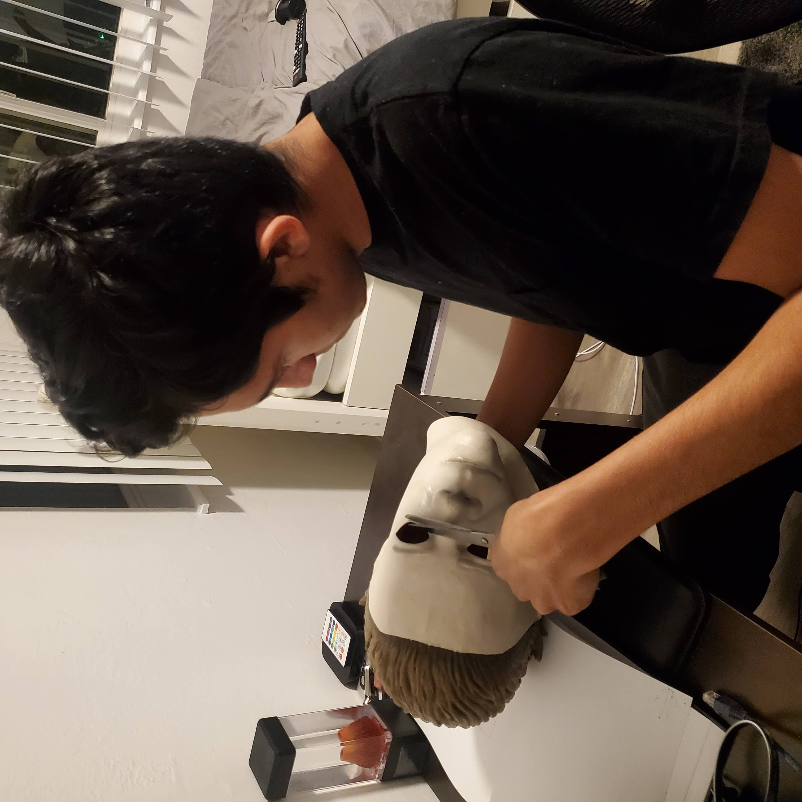

How It All Started
For as long as I could remember I always loved halloween because I got to be whoever I want and also because I was a big Horror Film addict, I love watching scary movies. I was always amazed by how the greatest special effects artist's created convincing life-like creatures on the big screen. thats when I had the idea of creating and selling film quality mask and costumes, so I created this website to sell the items you see in the gallery. - Isaac Flores
Please Note: to the owners of the images you see on my webpage. keep in mind that this is only a school project, not a real retail website.

Mask Making Process
To create life-like masks we first sculpt the design of the mask with clay. then we cover the entire clay sculpter with a silicon gel and let it sit for a couple hours. after the silicone gel gets stiff, we pull out the clay sculpter and there you would have a silicone mold that you can use to create multiple rubber masks. after we create the mold, we cast rubber on to the silicone mold and let it dry and after it dries, we paint it and ship it to our customers. heres a video link below to show you how the masks are made, also if you wish to to see my other works visit the link below:
How Lifelike Hollywood Creature Masks are Made
Video Promo